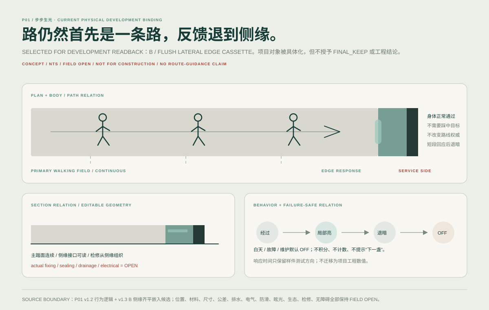

01
QINGJIANG STONE BOOK · EXPERIENCE DESIGN
清江石书
先游清江，
再读清江。
水上看，空中看，山中走；需要时，再打开一页清江。
游船索道步行回程
02
PROJECT / COMPLETE READING
这不是三个产品。
是一整套清江体验。
现有模型只是技术与实体线中的部分资产。项目主体由游程、路线、十三印、场景、数字陪伴、身体支持、品牌、记忆与技术证明共同构成。
查看完整项目架构 20 个章节容器
项目定义问题与机会场地与山水地域文化人群与状态游程与行为设计原理设计方法总体体验系统路线/交通/服务十三印数字陪伴关键场景实体/身体/感官品牌与视觉识别记忆/IP/文化产品设计深化技术/模型/工程证明方案演化/判断开放项/回程/结尾
03
L1 · PROJECT + EXPERIENCE
同一条清江，
从三个尺度重新认识。
BOAT / OPEN
先完整地看见清江。
水面把峡谷、峰林、岸线和行进距离同时拉开。设计在这里降低解释密度，让真实景观成为第一信息层。
04
L2 · WHY / PROJECT BRIEF
先把人放回清江，
再谈设计。
01真实清江 · 路线 · 身体
先确认人在什么景观、什么移动方式、什么身体状态里。
02服务 · 回程
能否走、如何退、何时休息，比内容完成度更优先。
03十三印 · 可选阅读
内容是一页页被打开，不强迫游客完成。
04数字 · 识别
数字工具提供方向与深度，也必须能够主动退场。
05记忆
旅程不以积分结束，而以重新认识清江结束。
05
L2 · CONTEXT + ANALYSIS
分析不是报告。
每一层都必须改变设计。
山水关系
河谷、峰林、两岸与开合变化决定观看距离与解释密度。
→ 决定景观先于说明地域内容
地名、故事、植物、山水知识与地方文化按场景适配，而非平均铺设。
→ 决定十三印内容位置移动与服务
游船、索道、步行拥有不同速度、视域、停留与返回压力。
→ 决定三尺度体验不同的人
儿童、青年、深读者、低体力人群在同一场景需要不同深度与支持。
→ 决定同场景不同阅读注意与行为
看、比、寻、听、等、框、望、辨、随、过、记、回、留。
→ 决定互动动作库状态与退路
NORMAL / DEGRADED / CLOSED / UNKNOWN 与 FULL / LIGHT / OFF。
→ 决定数字与服务的降级06
AUDIENCE / SAME SCENE, DIFFERENT DEPTH
不为不同人复制产品。
改变的是深度与支持。

07
L3 · DESIGN PRINCIPLES
十条原则，
约束整套设计。
- Real Qingjiang First先景观与身体关系，再解释。
- Service / Return First路线确定与恢复高于内容完成。
- Three Scales水上 / 空中 / 山中读取同一清江。
- Optional Content十三印可打开，不成为路线权威。
- Attention Density不同场景分配不同 UI、文字与互动密度。
- Digital Retreatability数字有用时出现，景观更强时退场。
- Minimum Intervention实体只在身体、恢复、阅读、回程真正需要时介入。
- Same Scene, Different Depth以深度和支持回应人群差异。
- Landscape → Relation → Explanation尤其 R06，先完整景观，再揭示关系。
- Return + Memory以再认识与记忆结束，而非 13/13 完成率。
08
L3 · DESIGN METHODS
不是套模板。
每个决定都有生成路径。
EVIDENCE证据
→SPATIAL FINDING空间发现
→DESIGN CONSEQUENCE设计后果
完整景观 → 自主观察 → 关系揭示 → 可选深读 → 主动退场。
用场景注意力密度和人群深度共同决定信息量。
多载体冗余，不把安全、路线与记忆押在单一媒介上。
状态变化时保持最小可用路径，并把 UNKNOWN 视为需要谨慎处理的状态。
09
L4 · ROUTE / SERVICE / RETURN
游程不是一条强制线。
路线首先服务人。

BOAT / CABLE / WALK 连接的是不同尺度的观察，不是三个必须完成的关卡。
DESIGN STATE SIMULATOR · 非实时运营数据
正常阅读完整游程可见；数字保持低干扰；回程入口始终可达。
10
THIRTEEN IMPRINTS / OPTIONAL READING
十三印不是十三关，
而是十三次可能发生的阅读。
看
先让景观完整出现；当你愿意继续时，再打开与此处真正相关的一页。
11
R06 · LANDSCAPE FIRST
先看见河谷，
再揭示关系。
01 完整景观02 自主观察03 关系揭示04 可选深读05 主动退场


12
R13 · PASS / WITHDRAW / RETURN
最后一段不是高潮堆叠。
而是收束与离场。

裂隙连续体验把注意力从“再看一个内容”转向“确认如何通过、如何退出、如何重新回到清江”。
REMOTE CONCEPT / NOT SITE PHOTO远程概念设计；不作为现场照片或测量证据。
13
QINGJIANG DIGITAL COMPANION
数字不是景区 App。
它是一位会退场的助手。
清江 · TODAY
现在最重要
路线与回程仍然清楚。READ附近有一页可读跳过不会影响你的游程
SERVICE / RETURN 回程始终可达
OFFLINE FIRSTNO GPS REQUIREDNO-PHONE PATHFAIL-CLOSED
14
PHYSICAL / BODY / SENSORY
实体不是越多越好。
只在身体真正需要时出现。

KEEP / HIGH-PRIORITY SUPPORT
靠 · 停 · 恢复
身体支持是实体线的首要任务之一；位置仍需现场验证。
步步生光
作为行走与夜间感知候选，不将概念状态伪装成落地状态。
Fluid Rest
保留为单点竞争方案，不占据项目主视觉。
清风吟
以风与听觉建立感官记忆，继续保留候选身份。
当前模型资产如何进入项目 不是产品总数
目前可见的 3 个模型资产只在“实体/身体/感官”和“技术/模型/工程证明”中承担尺度、空间、连接或构造关系证明。它们不替代真实清江，也不定义完整项目的产品数量。
15
BRAND + VISUAL IDENTITY
“清江石书”本身，
也是一套跨媒介识别系统。


命名 / LANGUAGE字标 / LOGOTYPE色彩 / COLOR字体 / TYPE线·印·页·路径 / GRAPHICS地图 / INFO动态 / MOTION材料 / PRINT
16
MEMORY / IP / TAKE-AWAY
离开以后，
还有什么能被带走？

清江旅记把游程转成可以带走的阅读痕迹。
我的石书只保存真正打开过、愿意记住的页。
清江一线 / 清江雾气从路径、气候与山水感受转成文化产品语言。
家庭层 / IP用更低门槛的角色与对象承接亲子记忆，而不替代项目主体。
17
L5 · DESIGN DEVELOPMENT + TECHNICAL PROOF
技术证明设计，
不替代设计。


当前边界概念 / NTS / 现场开放项。尺寸、材料、连接与安全只在证据支持的层级表达，不把远程研究写成施工确定性。
18
L6 · PROCESS / JUDGMENT / RETURN
不是完成十三页。
是再次认出清江。
方案允许 KEEP、HOLD、DROP；数字允许退场；十三印允许跳过；身体可以先休息；路线允许回程。项目的完成不是“全部打卡”，而是游客在离开时仍能重新理解自己刚刚经过的山、水、路与关系。

SERVICE / RETURN
回程不是结尾按钮。它从一开始就在系统里。
EVIDENCEINFERENCEASSUMPTIONDECISION
Research-grade design. Field and engineering validation remain open.